原著: ali (@waterloo_intern) — «22580: From GPT2 to Kimi3, Explained» の日本語訳。画像・コードはそのまま、本文のみ翻訳。

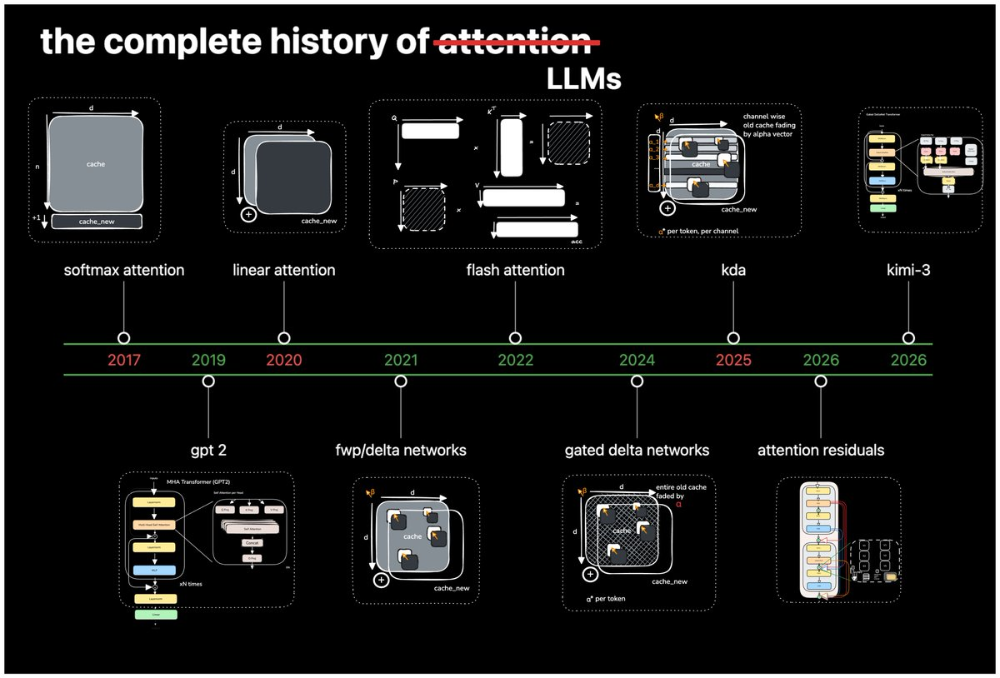
2万2580。それが、KimiK3（2026）の中に収まる GPT-2（2019）モデルの数だ。7年で2万2580倍にスケールした。だが、それは単なる……スケールなのだろうか？
このワークログでは、ここまでの道のりと、そのあいだに実際にどれだけ変わったか——あるいは変わらなかったか——を辿る。KimiK3 に至る主要なアーキテクチャの発展を追っていく。
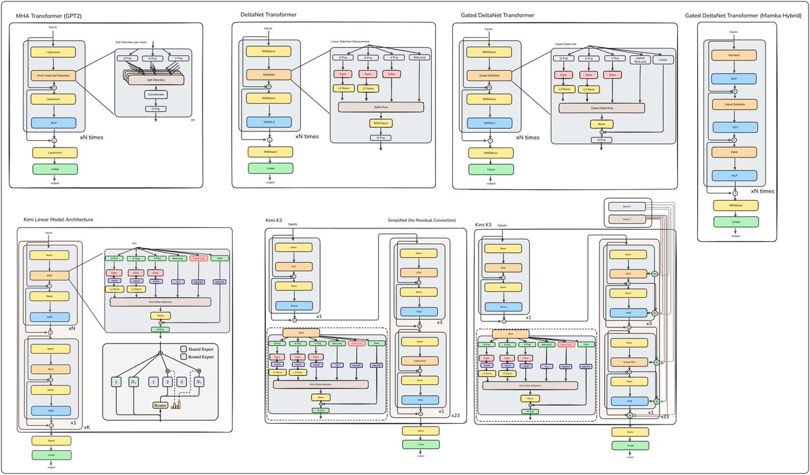
GPT-2
GPT-2 はデコーダ専用アーキテクチャである。
tok_emb = self.transformer.wte(idx) # token embeddings of shape (b, t, n_embd)
pos_emb = self.transformer.wpe(pos) # position embeddings of shape (t, n_embd)
x = self.transformer.drop(tok_emb + pos_emb)
for block in self.transformer.h:
x = block(x)
x = self.transformer.ln_f(x)
logits = self.lm_head(x)
return logits入力にはトークン埋め込みと位置埋め込みが与えられる。
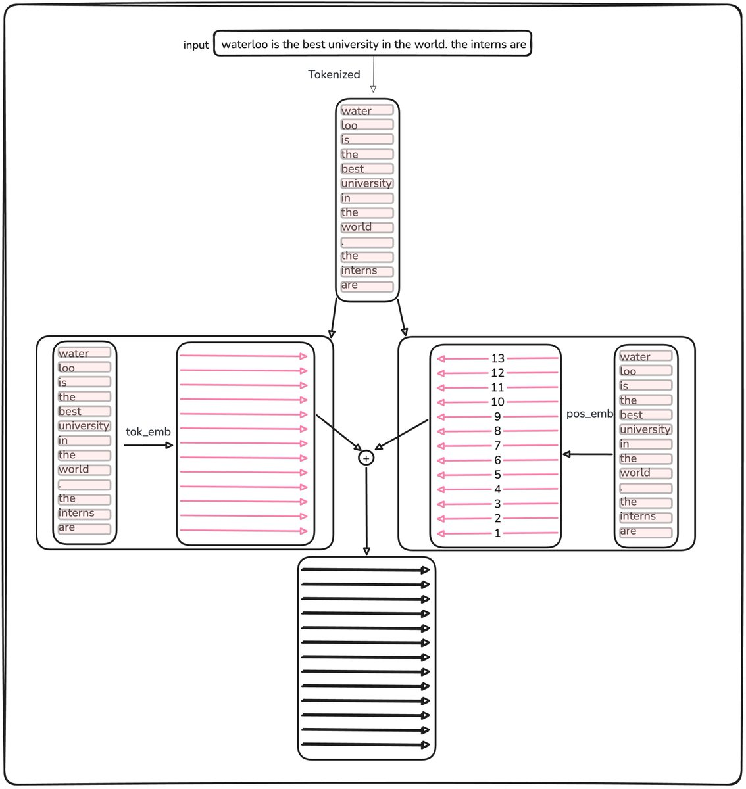
各 Transformer ブロックを拡大すると、こう見える。
class Block(nn.Module):
def __init__(self, config):
super().__init__()
self.ln_1 = LayerNorm(config.n_embd, bias=config.bias)
self.attn = CausalSelfAttention(config)
self.ln_2 = LayerNorm(config.n_embd, bias=config.bias)
self.mlp = MLP(config)
def forward(self, x):
x = x + self.attn(self.ln_1(x))
x = x + self.mlp(self.ln_2(x))
return x
Attention の処理は次のとおり。
B, T, C = x.size() # batch size, sequence length, embedding dimensionality (n_embd)
# calculate query, key, values for all heads in batch and move head forward to be the batch dim
q, k, v = self.c_attn(x).split(self.n_embd, dim=2)
k = k.view(B, T, self.n_head, C // self.n_head).transpose(1, 2) # (B, nh, T, hs)
q = q.view(B, T, self.n_head, C // self.n_head).transpose(1, 2) # (B, nh, T, hs)
v = v.view(B, T, self.n_head, C // self.n_head).transpose(1, 2) # (B, nh, T, hs)
# manual implementation of attention
att = (q @ k.transpose(-2, -1)) * (1.0 / math.sqrt(k.size(-1)))
att = att.masked_fill(self.bias[:,:,:T,:T] == 0, float('-inf'))
att = F.softmax(att, dim=-1)
att = self.attn_dropout(att)
y = att @ v # (B, nh, T, T) x (B, nh, T, hs) -> (B, nh, T, hs)
y = y.transpose(1, 2).contiguous().view(B, T, C) # re-assemble all head outputs side by side
# output projection
y = self.resid_dropout(self.c_proj(y))
return y最終的な隠れ状態行列が得られると、言語モデルヘッドがそれを語彙ロジットへ写す。自己回帰デコードでは、次トークンを選ぶのに必要なのは最終位置のロジットだけである。
これはデコーダ専用生成の非効率さでもある。モデルは入力のすべての位置の表現を計算するが、各デコードステップが消費するのは最終位置のロジットだけだ。キャッシュがなければ、その作業の多くが次のトークンでも繰り返される。

KV キャッシュは率直な観察から来る。生成トークンを入力へ付け足すと、さもなければ過去トークンすべての射影を再計算してしまう。それらのキーとバリューのベクトルを保存すれば、その冗長な作業を避けられる。
その保存が KV キャッシュだ。直前の N−1 トークン分のベクトルを保持し、十分に大きくなるとメモリ帯域のボトルネックになりうる。
全体として、トークン候補はおよそ5万、ブロックは12、ヘッドは12、埋め込み次元は768で、ベースラインモデルはおよそ1億2400万パラメータである。
vocab_size: int = 50304 # GPT-2 vocab_size of 50257, padded up to nearest multiple of 64 for efficiency
n_layer: int = 12
n_head: int = 12
n_embd: int = 7682.8兆パラメータの KimiK3 1体は、およそ2万2580個の GPT-2 と同じだけのパラメータを含む。
Linear Attention
Softmax attention は q·k 積のあとに非線形をかけ、すべてのクエリをすべてのキーへ結合する。Linear attention は代わりに、ELU+1 のような特徴写像を q と k に別々に適用する。これで積が結合法則を満たすようになり、増え続ける K と V の集合を固定サイズの D×D 状態へ畳み込める。
論文の O(N²) という枠組みには戸惑った。「Transformer の各時間ステップのコストは、その時点の系列長の二乗にスケールする」というのは正しくない。それが Flash Attention が直すものだ……と思ったら、その論文は2020年発表だった。
当時の訓練では、しばしば完全な N×N Attention 行列を実体化し、FlashAttention はまだなく、参照用の自己回帰実装は KV キャッシュなしでトークン履歴を再計算することも多かった。
def forward(self, x, mask=None, past_kv=None):
# x is b,t,d
b,t,d=x.shape
d_head=d//self.num_heads
h=self.num_heads
qkv=self.qkv_proj(x)
q=qkv[:, :, :d].view(b,t,h,d_head).transpose(1,2)
k=qkv[:, :, d:2*d].view(b,t,h,d_head).transpose(1,2)
v=qkv[:, :, 2*d:].view(b,t,h,d_head).transpose(1,2)
# at prefill, q,k,v have shapes b,h,t,d
# at decode, shape is b, h, 1, d
# so i cat at the t dimension, dim(2)
if past_kv is not None:
k_past=past_kv[0]
v_past=past_kv[1]
k=torch.cat((k_past, k), dim=2)
v=torch.cat((v_past, v), dim=2)
scores=(q@k.transpose(-1,-2))/math.sqrt(d_head)
if past_kv is None: #we're in prefill and need to mask
causal_mask=torch.ones(t,t,dtype=bool, device=q.device)
causal_mask=torch.triu(causal_mask, diagonal=1)
scores=scores.masked_fill(causal_mask, float('-inf'))
if mask is not None:
scores=scores.masked_fill(~mask, float('-inf'))
#get attn (bhtt x bhtd)
attn=scores.softmax(-1)#bhtt
o=attn@v #bhtd
o=o.transpose(1,2).contiguous().view(b,t,d) #b,t,d
# use x to get qkv
o_proj=self.o_proj(o)
past_kv=(k, v)
return o_proj, past_kv同じ過程は図のほうがわかりやすい。各デコードステップは HBM へ ND 読みを2回、1D 書きを2回行い、KV キャッシュは系列長に対して線形——O(N)——に成長する。

過剰な読み書きに注目してほしい。この論文はそれを次のように置き換える。
def forward(self, x, mask=None, cache=None):
# x is b,t,d
b,t,d=x.shape
d_head=d//self.num_heads
h=self.num_heads
qkv=self.qkv_proj(x)
q=qkv[:, :, :d].view(b,t,h,d_head).transpose(1,2)
k=qkv[:, :, d:2*d].view(b,t,h,d_head).transpose(1,2)
v=qkv[:, :, 2*d:].view(b,t,h,d_head).transpose(1,2)
k=F.elu(k)+1
k=k.transpose(-1,-2)
q=F.elu(q)+1
S,z=cache if cache is not None else (0.0, 0.0)
S=S+k@v
z=z+k
o=q@S #bhtd
denom=q@z
o_scaled=o/denom
o_scaled=o_scaled.transpose(1,2).contiguous().view(b,t,d)
o_proj=self.o_proj(o_scaled)
cache=(S,z)
return o_proj, cacheトレードオフがある。
ここでは、softmax が使う指数を、相互作用の前に q と k それぞれへ適用する ELU+1 で置き換える。どちらも結果スコアを正規化するが、linear attention の特徴写像は softmax カーネルの表現力が弱い近似である。その近似は忠実度を下げうるが、実務上の精度低下はアーキテクチャとワークロードに依存する。
なお、qk の和での割り算は今も行うが、図では単純化のため省略されている。高レベルでは、Attention は次の3ステップからなる。
- qk スコアを非負にする。Linear attention は ELU+1、softmax は指数を使う。
- 和で割る。
- バリューの加重平均を計算する。
これで基本的な Attention の契約は保たれるが、QK スコアを非負にするために表現力が弱い特徴写像を使っている。
DeltaNet（Fast Weight Programmers）
有限キャッシュは、すでに格納された情報を上書きするか合成しなければならない。トークン i−1 の状態は専用スロットを持たず、同じ D×D 行列へ加算される。したがって新しいクエリは、各過去トークンの完全に孤立した表現を取り出せなくなる。
その加算こそが効率向上の源でもある。連結ではなく加算でキャッシュを更新すれば O(N) 成長は防げるが、同じ操作が情報の干渉を起こす。DeltaNet はこの回収可能性の喪失に対処する。
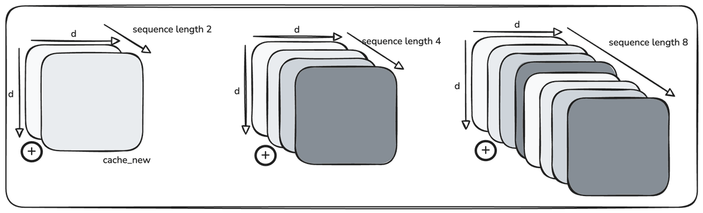
Schlag の論文（Fast Weight Programmers）の言い回しは的確だ。「系列長が記憶容量を超えると、モデルは過容量レジームに入りうる。そのようなレジームで適切に動くには、モデルは記憶内容と動的に相互作用し、どのキー・バリュー連合を残しどれを消すかを選択的に決めることを学ぶべきだ。純粋な加算命令はこの目的には不適切かもしれない……有限サイズの記憶へ新しい連合を終わりなく足し続けると、式17のように、いずれ限界に達する。」
Linear attention が魅力的になるレジーム——N が D よりはるかに大きい場合——は、同時にその主制約も露わにする。状態が実効容量を超えると、更新が加算でキャッシュから何も出ていかないため、連合が干渉し始める。
def forward(self, x, mask=None, cache=None):
# x is b,t,d
b,t,d=x.shape
d_head=d//self.num_heads
h=self.num_heads
qkv=self.qkv_proj(x)
q=qkv[:, :, :d].view(b,t,h,d_head).transpose(1,2)
k=qkv[:, :, d:2*d].view(b,t,h,d_head).transpose(1,2)
v=qkv[:, :, 2*d:].view(b,t,h,d_head).transpose(1,2)
q = F.normalize(F.silu(q), dim=-1)
k = F.normalize(F.silu(k), dim=-1)
beta = torch.sigmoid(self.w_beta(x)).view(b, 1, t, 1)
# new: per-token write strength
S = cache if cache is not None else 0.0
v_old = k @ S # read the board at this key
u = beta * (v - v_old) # the delta: only what's actually new
S = S + k.transpose(-1, -2) @ u # same outer-product write as before
o = q @ S # read, no denominator
o = o.transpose(1, 2).contiguous().view(b, t, d)
return self.o_proj(o), S
視覚的な例のほうが追いやすい。

単一の連合を S = k.T @ v として書く。同じキーで読み戻すと k @ (k.T @ v)、すなわち (k @ k.T) v になり、キーの二乗ノルム倍の v になる。つまり読み出しはキーの二乗ノルムでスケールされ、k を単位長に正規化するか結果をノルムで割れば、v を正確に取り戻せる。
Q も学習されたポインタである。Wq と Wk は同じ残差ストリームを読み、ある事実へのクエリは、その事実が書き込まれたキー方向を指す。更新はまず、現在のキーがキャッシュから何を取り出すかを尋ねる。格納したいバリューからその既存情報を引き、キーにその差を掛け、結果を足し戻す。古い情報が除かれ、新しい情報がその場所に書かれる。
DeltaNet（Parallelizing Linear Transformers with Delta Rule）
このポストでいちばん難しい節だ。実用的な理解に至るまでおよそ7時間かかったので、実装から説明を組み立てる。要するに DeltaNet は、一般化された Householder 遷移行列を持つ一次線形再帰を実装し、ハードウェア効率の良い線形時間訓練のためのチャンク並列順伝播を可能にする。入力と出力をサイズ C の複数チャンクへ分割し、各チャンクの出力を、前チャンクの最終状態と現チャンクのクエリ・キー・バリュー・ブロックから計算する。
実務上の問題は prefill だ。T トークン系列への Delta 規則の直接実装は次のようになる。
S = torch.zeros(b, h, dh, dh) if cache is None else cache
outs = []
for i in range(t):
k_i = k[:, :, i:i+1]
v_i = v[:, :, i:i+1]
b_i = beta[:, :, i:i+1]
v_old = k_i @ S
u_i = b_i * (v_i - v_old)
S = S + k_i.transpose(-1, -2) @ u_i # write
outs.append(q[:, :, i:i+1] @ S)
o = torch.cat(outs, dim=2) 標準 Attention と違い、この定式化はすべてのキーベクトルで補正が必要なので、並列行列積への道はすぐには見えない。Delta 規則がなくても、直接の linear-attention prefill は逐次のままである。
S = torch.zeros(b, h, dh, dh) if cache is None else cache
outs = []
for i in range(t):
q = q[:, :, i:i+1]
k = k[:, :, i:i+1]
v = v[:, :, i:i+1]
S=S_old+k@v
o=q@S #bhtd
o=self.norm(o)
o=o.transpose(1, 2).contiguous().view(b, t, d)
out=self.o_proj(o)
cache=S
outs.append(out)
o = torch.cat(outs, dim=2)チャンク化した定式化のほうが効率的だ。仕組みは例で追うほうがわかりやすい。
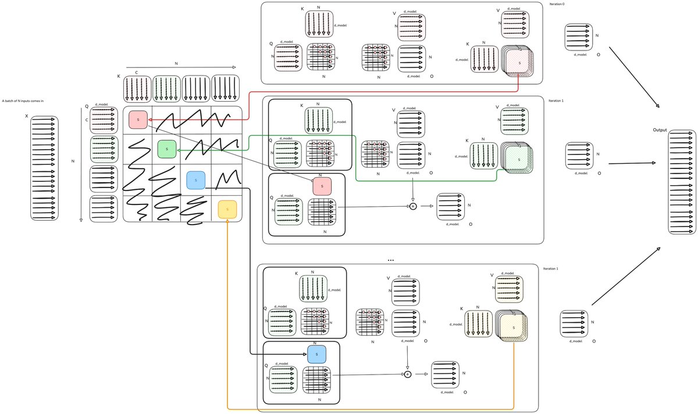
C=N にすると標準の O(N²) Attention に戻り、C=1 だと通常の linear attention になる。中間の値では、チャンク内の追加作業とハードウェア利用率のあいだを補間する。実務では C はしばしば64や128で、テンソルコア命令がその粒度で効率的に動くからである。UMMA がその一例だ。
中間タイルは状態更新の一部として S へ畳み込まれる。

S = torch.zeros(b, h, dh, dh) if cache is None else cache
outs = []
for i in range(t//C):
q_c = q[:, :, i*C:(i+1)*C]
k_c = k[:, :, i*C:(i+1)*C]
v_c = v[:, :, i*C:(i+1)*C]
o_prev=q_c@S #this is everything up to this block
attn=(q_c@k_c.transpose(-1,-2)).tril() #masked attention
o_curr=attn@v_c
o=o_prev+o_curr
S_new=k_c.transpose(-1,-2)@v_c #recurrent attention
S=S+S_new
outs.append(o)
o = torch.cat(outs, dim=2)ブロック内では q(kᵀv) を行う。これはスコア先、マスク付きの通常 Attention 順だ。ブロック間では (kᵀv)q に従い、再帰順・状態先になる。Attention は O(N²) で成長するが、こちらはそうならない。ブロック内では本物の Attention（マスク付き QKᵀ に V）を行い、ブロック間ではすべてを状態へ畳み込み、1回の matmul で読み戻す。コストは二つに分かれる。固定部分 2Ld² は状態作業で C に依存しない。成長部分 2LCd は対角上に座るスコア行列だ。フル Attention は C が L に等しい場合で、第二項が 2L²d になり二次になる。だから C を小さくするほど FLOP は減る。
純粋な FLOP では C=1 がいちばん安いが、壁時計時間では必ずしもそうではない。GPU は、作業が行列積ハードウェアへうまく載るとき、より多くの算術をより速く終えられる。
次のステップは、同じ手法を DeltaNet へ拡張することだ。

根本の問題は単純で、純粋加算 Attention 用のチャンク法は、デルタ更新にはそのまま適用できない。
v_old = k_i @ S
u_i = b_i * (v_i - v_old)差し引くべき情報を計算するには、すべての状態が必要になる。数学的な再パラメータ化なしでは、同じようには並列化できない。そこで著者はデルタ更新を次から書き換える。
u=v_new-v_old
S_t= S_(t-1)+K.T@u
o=q@S_Tここでは逐次ループが反復ごとに1つのデルタを計算する。再パラメータ化した形は次のとおり。
S_t = S_{t-1}(I − β_t k_t k_tᵀ) + β_t v_t k_tᵀ
o_t = S_t q_tこの定式化により、チャンク化したコードが C 個のデルタを一度に計算できる。
def chunk_delta_rule_forward(Q, K, V, beta, C):
# L: sequence length, d: head dimension
L, d = Q.shape
# chunking
Q, K, V = map(lambda x: x.reshape(-1,C,d), [Q, K, V])
beta = beta.reshape(-1, C)
K_beta = K * beta.unsqueeze(-1)
V_beta = V * beta.unsqueeze(-1)
# compute eq. 10 with vectorized forward substitution for fast inverse
T = -(K_beta @ K.t()).tril(-1)
for i in range(1, C):
T[i, :i] = T[i, :i] + (T[i, :, None] * T[:, :i]).sum(-2)
T += torch.eye(C)
W = T @ K_beta
U = T @ V_beta
# chunkwise parallel. Eq. 8-9
S = torch.zeros(d, d)
O = torch.empty_like(V)
for i in range(L//C):
q_i, k_i, w_i = Q[i], K[i], W[i]
u_i = U[i] - w_i @ S # the corrections, all of one chunk
o_inter = q_i @ S
A_i = (q_i @ k_i.t()).tril() #qk.t
o_intra = A_i @ u_i # attention @ v (with corrections, so u)
S += k_i.t() @ u_i # update state with addition
O[i] = o_intra + o_inter #update output with flash + recurrent
return O.reshape(L, d)これで最初の比較点に至る。MHA 対 DeltaNet Transformer だ。
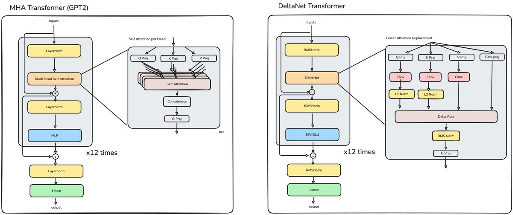
Gated Delta Net
これでキャッシュを精密に変更する方法が手に入った。新しい事実（新しいキーベクトル）ごとに、その点に格納された古い情報を正確に見て、注目したい新しい情報で置き換えられる。
しかしこの機構は、具体的な置換がある連合しか忘れられない。コンテキスト切替で複数連合を効率よく消したり、容量を空けるために記憶一般を減衰させたりはできない。
もし純粋加算の linear attention をしていたなら、
忘れる能力を足すのは簡単だっただろう。忘れっぽい状態を制御するパラメータが1つあればよい。
S_old=cache
S_new=k@v
# cache=S_old+S_new
cache=alpha * S_old + S_new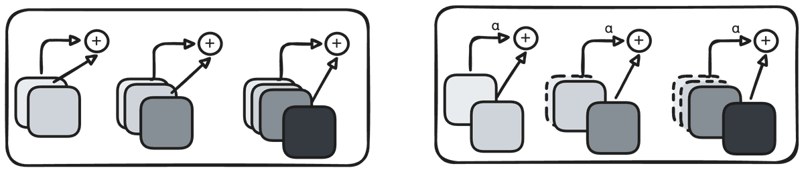
これが Mamba-2 の寄与だ。前のキャッシュを減衰させ、新しいキャッシュをフル強度で足し、状態が無制限に成長しないようにする。
各時間ステップですべてのキー・バリュー連合を動的比率で一様に減衰させるのは、実用的な手法であり、Mamba がやっていることだ。だが、連合ごとの重要度の違いは考慮しない。
つまり、特定の連合だけを忘れたいときでも、すべての連合が同じだけ忘れられる。対照的に Delta 規則は単一の事実を更新できるが、残りの事実を減衰させる手段がない。
そこで Gated Delta 規則は、Mamba のゲート付き更新規則と Delta 規則を組み合わせる。パラメータ alpha を加え、1のとき純粋な Delta 規則、0のとき記憶をクリアする。課題は、同じ並列チャンク法でこれを実装することだ。
実装は前節の DeltaNet 再パラメータ化を使う。数学はほぼ同じで、追加は一つ——前状態の減衰を制御する、データ依存の0〜1スカラーだ。これで効果的なキー・バリュー連合学習と適応的メモリ管理が組み合わさる。
対応するコード変更を以下に示す。
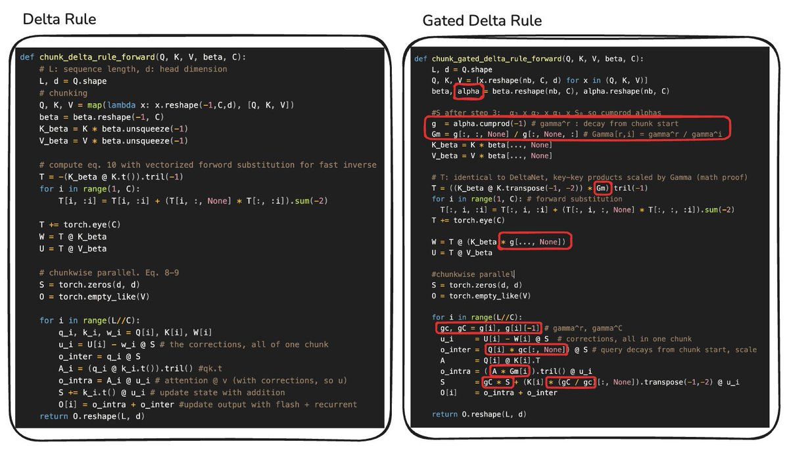
γʳ/γⁱ 項は累積減衰を表す。時刻 x で書かれ x+t で読まれるトークンは、αₓαₓ₊₁αₓ₊₂…αₓ₊ₜ で掛けられてきた。これはプレフィックス和の乗法版である。
結果のアーキテクチャはこう見える。

KDA / Kimi Linear
この時点で研究者は、Gated DeltaNet と Mamba のように、複数の Attention 形式を一つのアーキテクチャ内で組み合わせるハイブリッドモデルを試し始めた。
Kimi Linear が注目を集めた中心主張は、制御された比較でフル Attention を上回ったことだ。著者は、品質が良くデコードスループットが最大6倍の、ドロップイン置換として提示した。
Kimi Linear は、細粒度ゲーティングを導入して Gated DeltaNet を改善する。単一スカラー減衰ではなく、チャネルごとに別の減衰値を学習する。
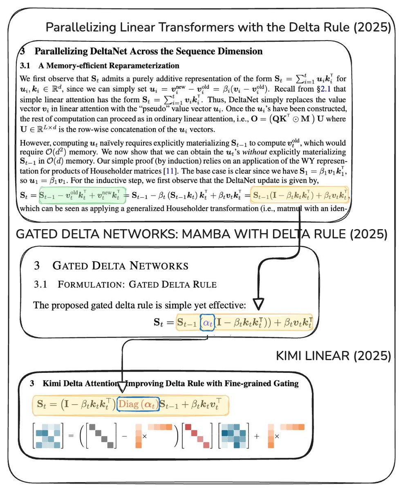
KDA の更新規則は似たままだが、コードは今や次のように見える。
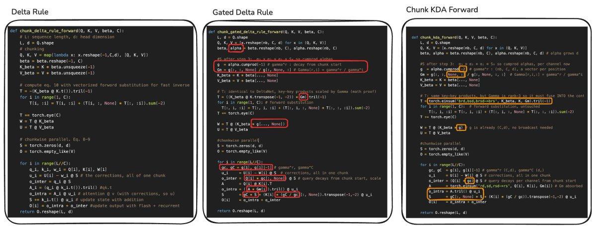
ここで alpha.reshape(nb, C, d) が、論文の最大の寄与——メモリ減衰への細粒度制御——を捉えている。
DeltaNet Transformer の隣に置くと、Kimi Linear アーキテクチャは三つの大きな変更を導入する。
- Multi-head Latent Attention（MLA）層を挟み込むハイブリッド系を使う。
- MLP を Mixture-of-Experts（MoE）層に置き換える。
- alpha 射影を通じて DeltaNet に容量を足す。

後の節で MLA と MoE をより詳しく扱う。いま重要なのは、これが盲目的スケーリングではないことだ。追加容量には具体的な数学的目的がある。チャネルごとのスケールが、メモリ減衰へのより細かい制御をモデルに与える。
スケーリング則はなお有効だが、容量は正しい場所に、システムが使える形で足さなければならない。この進歩の各アーキテクチャは、直前の系の具体的な制約に対処するために容量を足している。
Kimi K3
結局のところ、KimiK3 の言語バックボーンは上の Kimi Linear モデルに似ている。23個の4層マクロサイクルを含む。各マクロサイクルでは、3層が Kimi Delta Attention、4層目が Multi-head Latent Attention を使う。最初の層は dense フィードフォワード、残りのすべての層は latent Mixture-of-Experts を使う。
一見すると、Kimi Linear からの変更は控えめに見える。
- 大幅なスケール増
- 12層ごとの Blockwise AttnRes
- MLA クエリ LoRA と出力ゲーティング
- 潜在空間 MoE
- SiTU 活性化
- Gated MLA
KDA は定数状態の再帰メモリを供給し、周期的な MLA 層はコンテキスト上のフル softmax 検索を保持する。以下の簡略図は、下で述べる変更の有用な参照になる。

まずはより直接的な変更から始める。Gated MLA、潜在空間 MoE、SiTU 活性化だ。
Gated MLA は、取得された各特徴のうちどれだけが MLA から残差ストリームへ通るかを決める。入力から射影したゲートとの要素積でそれを行う。
従来の MoE では、学習されたルータが内積類似度で各トークンを専門家ネットワークの部分集合へ送る。KimiK3 の専門家は合計898。うち2つは共有で全トークンを処理し、残る896のうちルータが各トークンに16を選ぶ。
KimiK3 は専門家の活性化も変える。up 射影へ SiLU をかけ、ゲートと要素積し、down 射影する代わりに、SiTU を使う。
d = x.shape[-1] // 2
gate = x[..., :d].to(torch.float32)
up = x[..., d:].to(torch.float32)
situ_a = self.beta * torch.tanh(gate / self.beta) * torch.sigmoid(gate)
if self.linear_beta is not None:
up = self.linear_beta * torch.tanh(up / self.linear_beta)
return (situ_a * up).to(x.dtype)モデルはまた、共有専門家への入力を down 射影し、その最終和を up 射影する。
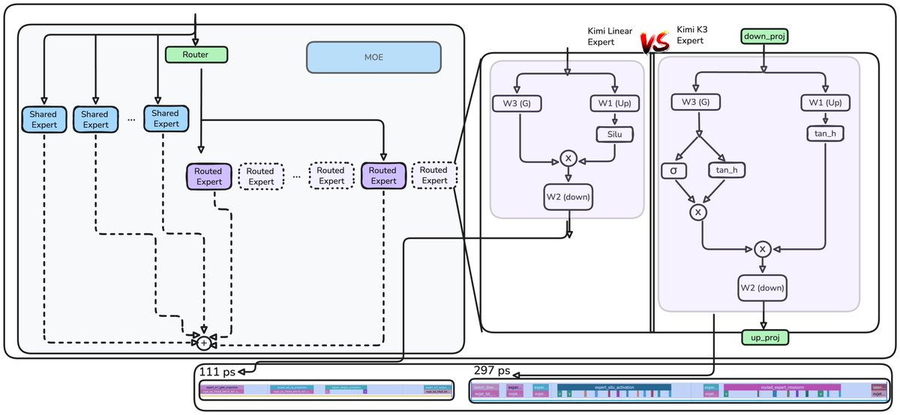
これはモデル推論で繰り返し現れる課題を示す。融合カーネルがなければ、新しい活性化は元の経路よりほぼ3倍遅い。相殺する最適化の一つは、専門家が圧縮された潜在空間で動くことで、順伝播が大幅に速くなり FLOP をほぼ半減することだ。
残る変更は、MLA クエリ LoRA、出力ゲーティング、12層ごとの blockwise Attention Residuals だ。AttnRes は推論レイテンシをおよそ2%増やすが、二つの重要な利点がある。
- より早い表現の選択的検索——残差の希釈と隠れ状態の肥大を緩和する
- 1.25倍の計算上の利点
AttnRes と MLA は、同じ根底の制約に別方向から対処する。KDA 層は定数サイズ状態で動き、必然的に情報を捨てる。MLA はトークン・コンテキストから検索し、AttnRes はより早い深さ方向の表現から検索する。
AttnRes
この節の助けをしてくれた @chloey3k に感謝する。各順伝播で、入力は層のスタックを通る。ここでは各層が Attention ブロック（KDA または MLA）と MLP または MoE ブロックからなる。通常、各層への入力は、元の埋め込みと先行するすべての層出力の和であり、すべて等しく重み付けされる。
$$h_l = h_1 + \sum_{i=1}^{l-1} f_i(h_i)$$
ここで h_i は層 i への入力、h_1 は現在トークン（これまでの系列の最後のトークン）の埋め込み、f_i(h_i) は層 i（Attention または MLP ブロック）の出力である。
問題は選択的アクセスの欠如だ。異なる層タイプが同じ集約状態を受け取るが、異なる重み付けの恩恵を受けうる。再帰が純粋加算のため、後段の層は蓄積残差に影響するためにますます大きな出力を学習しなければならず、訓練を不安定化しうる。すべての層を等しく扱う代わりに、AttnRes はその和の各項に専用の重みを掛け、文脈でいちばん有用な層へより多くの重要度を与えられるようにする。
$$h_l = \alpha_0 \cdot h_1 + \sum_{i=1}^{l-1} \alpha_i \cdot f_i(h_i)$$
各重み alpha_i はクエリ・キー内積から計算される。クエリは層ごとに学習され、キーとバリューはより早い残差ストリーム状態から来る。スコアは和が1になるよう正規化され、それらの状態の加重結合を作るのに使われる。

したがってモデルは、直前の前任だけに条件付けする必要がない。AttnRes は各層に、より早い層出力への選択的アクセスを与え、学習されたクエリが現在の計算にいちばん有用な表現を取り出せるようにする。
以下の疑似コードは、同じ考えをブロック粒度で適用する。ブロックは、12個のデコーダ層にわたって蓄積された Attention と MLP 出力の要素和であり、後の AttnRes 混合用の単一の深さ表現として保存される。
すべての層で残差 Attention を適用すると、訓練と推論のコストが増えすぎる。固定ブロック境界だけで適用すれば、大半の利益をより低いコストで捉えられる。KimiK3 では、各境界は12デコーダ層のあとにある。23個の4層マクロサイクル全体で、これは8個の AttnRes ブロックを生み、推論速度を上げる。
おそらくこれが block_attn_res 関数でいちばん重要な部分だ。
V = torch.stack(blocks + [partial_block]) # [N+1, B, T, D]
K = norm(V)
logits = torch.einsum('d, n b t d -> n b t', proj.weight.squeeze(), K)
h = torch.einsum('n b t, n b t d -> b t d', logits.softmax(0), V)
return hこれで GPT-2 から KimiK3 までの進歩は完了する。
中心にある変化はスケールだけではない。各アーキテクチャ段階は、モデルが何を格納するか、その状態をどう更新するか、あるいは固定サイズ状態が保てない情報をどう検索するかを変える。
KimiK3 は、定数状態の再帰メモリ、周期的な softmax 検索、疎な専門家容量、選択的な深さ方向残差アクセスを組み合わせる。結果は、追加容量を具体的な機能的役割がある場所に使う系である。
本質的に、固定容量の連想記憶（固定次元）には追い出し方針が必要だ。純粋加算の線形操作は、容量に達するとやがて干渉を足すからである。そのため、ゲーティング、ルーティング、減衰のような学習された選択が必要であり、Attention はいちばん効果的な選択的読み取り機構である。
出典: https://x.com/waterloo_intern/status/2081762065392541951 · 翻訳は読者向け公開用。図中の英語ラベルは原図のまま。